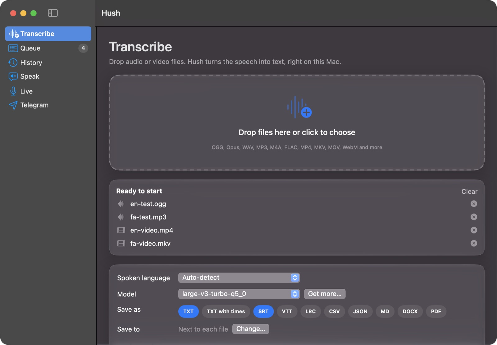
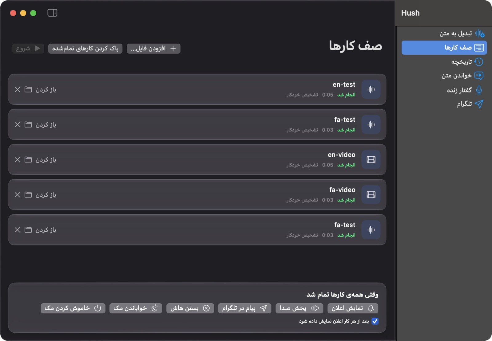
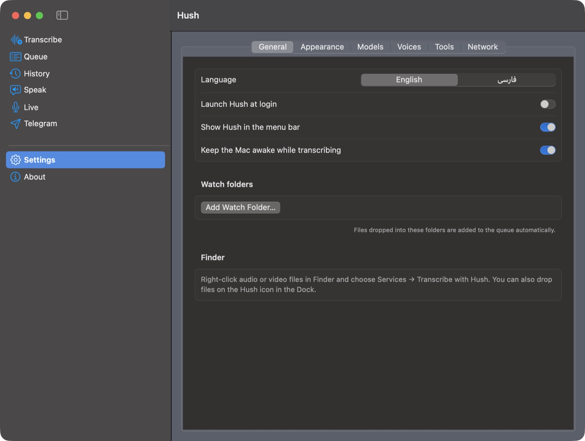

Drop in audio or video and Hush turns the speech into text, subtitles or a document. It runs whisper.cpp on your own Mac, so nothing is uploaded, and it speaks Persian as well as English.

What it does
Hush wraps proven open-source tools in a window anyone can use. Pick files, press Start, get text.
OGG and Opus voice notes, WAV, MP3, M4A, FLAC, plus MP4, MKV, MOV and WebM videos. FFmpeg handles the conversion.
PDF, Word, plain text, timestamped text, SRT and VTT subtitles, LRC, CSV, JSON and Markdown. PDF and Word are right-to-left for Persian.
Add a folder and walk away. Progress and time left for every file, then a notification, a sound, a Telegram message, sleep or shut down.
Every line is linked to its moment in the recording. Click to hear it, fix the words, find and replace, then export again.
Read any text aloud with macOS voices or natural Piper voices, including Persian. Save as MP3, M4A, WAV or OGG.
Talk into the microphone and the words appear as you speak, transcribed by a local whisper-server.
Made for Persian
Switch the whole interface to Persian and it flips right to left. Transcripts get their letters and spacing fixed automatically.

Telegram
Connect your own bot and send it voice messages, audio or video from your phone. Hush transcribes them on the Mac and replies with the text.
Everything in one place
Hush checks what it needs and installs it with one click through Homebrew. Pick a speech model by size, speed and accuracy and download it in the app.

Get started
Hush is free. The speech tools run locally, so after the first setup it works without internet.
Get the latest DMG from GitHub Releases and drag Hush to Applications. The first time, right-click it and choose Open.
github.com/amirhp-com/Hush/releases
The welcome screen installs them for you, or run this in Terminal:
brew install whisper.cpp ffmpeg
large-v3-turbo-q5_0 (574 MB) is a good balance for Persian and English. Then drop your files in and press Start.
Settings → Models
Built with
Hush runs these tools as separate programs. Thanks to everyone who builds them.
Free, open source, and private by design.